개발자 · AI CLI 사용자
로컬 셸이나 원격 개발 서버에서 CLI를 실행하세요. 긴 응답은 문서처럼 읽고 코드만 복사하며, 감지된 질문에는 클릭으로 답합니다.
SSH · 문서 모드 · AI CLI · 나만의 작업대
서버에 연결하는 일부터 긴 출력을 읽고 다음 행동을 결정하는 순간까지. 여러 SSH 세션, 문서처럼 읽는 터미널, 재사용하는 명령과 선택적 AI를 하나의 무료 작업대에 모았습니다.
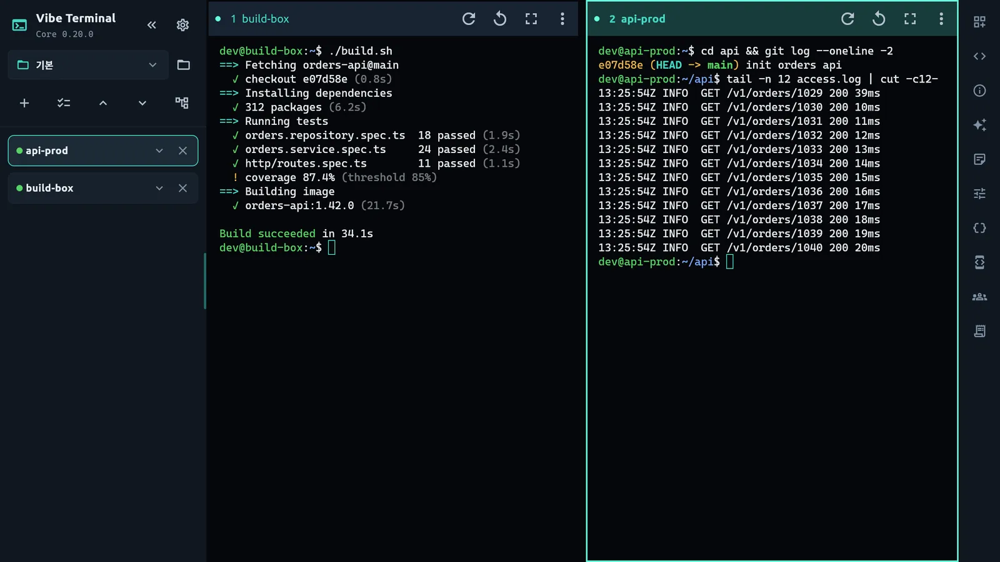
Your everyday terminal workspace
접속할 서버를 찾고, 로그를 읽고, 명령을 다시 입력하고, AI CLI의 질문에 답하는 흐름을 한곳에서 이어갑니다. 이런 일을 자주 한다면 Core가 잘 맞습니다.
로컬 셸이나 원격 개발 서버에서 CLI를 실행하세요. 긴 응답은 문서처럼 읽고 코드만 복사하며, 감지된 질문에는 클릭으로 답합니다.
빌드 결과와 서비스 로그를 나란히 보세요. 호스트 메모에 점검 순서를 남기고 스니펫의 변수만 바꿔 반복 명령을 실행합니다.
여러 SSH 호스트를 그룹으로 정리하고 휴대폰에서도 접속하세요. tmux로 유지 중인 작업은 네트워크가 돌아오면 다시 확인할 수 있습니다.
Terminal, easier to read
같은 세션의 출력을 두 가지 방식으로 봅니다. 터미널의 조작감이 필요할 때는 그대로, 긴 설명과 코드를 읽을 때는 GUI 문서 모드로 전환하세요. Core에 기본으로 제공됩니다.
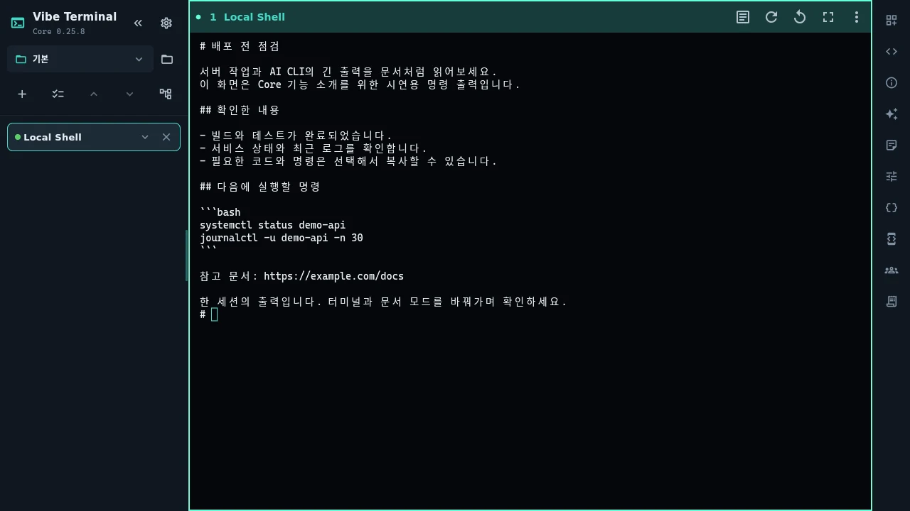
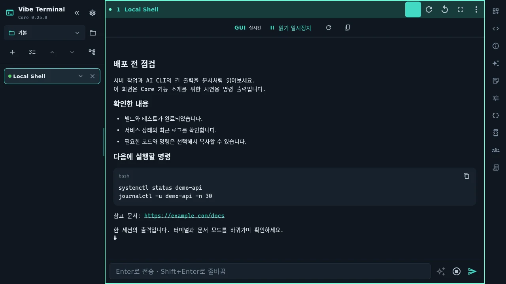
Core 0.25.8 실제 앱 · 시연용 명령의 같은 출력을 비교한 화면입니다. 이미지를 누르면 크게 볼 수 있습니다.
일반 문서처럼 텍스트를 선택하고 스크롤하세요. 인식된 제목·목록·코드 블록은 읽기 좋은 형태로 표시하며, 코드 블록에는 복사 버튼이 붙습니다.
웹 URL의 메뉴에서 브라우저로 열거나 링크를 복사하세요. 하단 입력창은 Enter로 전송하고 Shift+Enter로 줄을 바꿉니다. 한글 조합 중 Enter는 전송하지 않습니다.
문서 모드는 실제 터미널 출력을 다시 표현하는 보기입니다. 별도의 AI 대화 기록이나 에이전트 실행 엔진을 만드는 기능이 아니며, 전체 화면 TUI 조작은 터미널 모드가 더 적합할 수 있습니다.
You stay in the loop
Claude Code, Codex, OpenCode의 지원되는 선택 화면을 감지해 문서 모드에서 선택지와 직접 입력 영역을 보여 줍니다. 작은 화면에서도 방향키만으로 답을 찾아다니는 수고를 줄입니다.
인식한 질문의 선택지를 터치하거나 클릭합니다. Codex가 접어 둔 대기 질문도 지원되는 화면에서 열어 확인할 수 있습니다.
선택지만으로 충분하지 않으면 직접 메시지를 입력하세요. CLI와 화면 형식에 따라 제공되는 동작이 달라질 수 있습니다.
AI Chat을 연결했다면 입력창 왼쪽 AI 버튼으로 2~4개의 답변 후보를 요청하세요. 후보를 클릭하면 그 답변이 즉시 세션에 전송됩니다.
자동 응답 제안은 요청할 때만 실행합니다. 질문·출력 맥락은 설정한 LLM에 전달될 수 있으며 제공자 요금이 적용됩니다. 선택 화면 인식은 CLI 버전과 출력 형태에 따라 달라질 수 있어, 필요한 경우 언제든 터미널 모드에서 직접 조작하세요.
Feature tour
세션 관리부터 반복 명령, 서버별 기록, 선택적 AI까지. 실제 Core 앱 화면으로 사용 흐름을 살펴보세요. 스크린숏을 누르면 크게 볼 수 있으며, 촬영 버전과 시연 조건은 페이지 하단에 안내합니다.
세션 목록에서 서버를 고르고 칸을 나누기만 하면 됩니다. 빌드를 돌리면서 운영 로그를 보고, 한 칸만 크게 키웠다가 다시 돌아올 수 있습니다.
서버에 tmux가 설치되어 있고 호스트의 “작업 이어가기”를 켰다면, 네트워크가 끊긴 동안에도 서버에서 실행 중인 작업에 다시 붙을 수 있습니다. 서버 재부팅이나 작업 자체의 종료까지 복구하는 기능은 아닙니다.
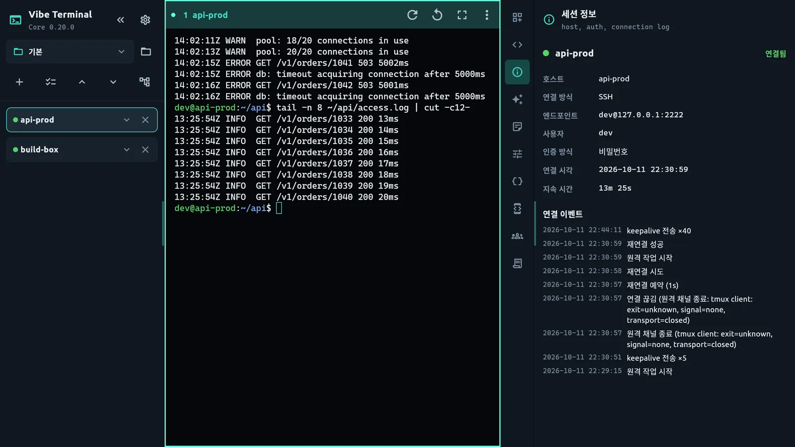
주소·포트·사용자를 저장하고 비밀번호, 공개키, 키보드 인터랙티브(2FA) 중 인증 방식을 고릅니다. 처음 연결할 때는 서버의 호스트키 지문을 보여 주고 직접 신뢰하도록 묻습니다.
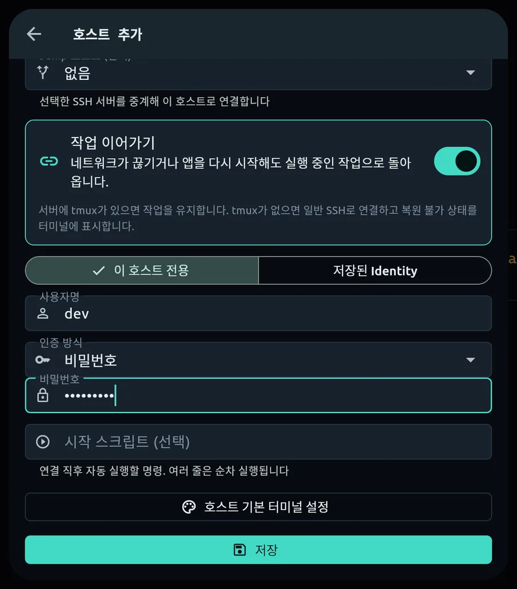
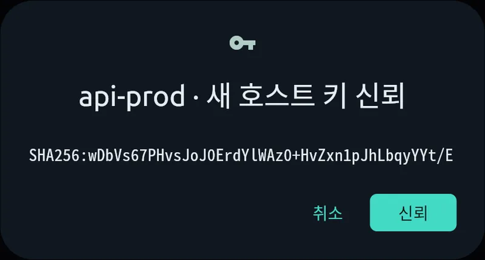
자주 쓰는 명령을 전역 또는 호스트별 스니펫으로 저장합니다. 본문에 {{lines}} 같은 변수를 넣으면 실행 직전에 값만 물어보고 바로 실행하거나 붙여 넣습니다.
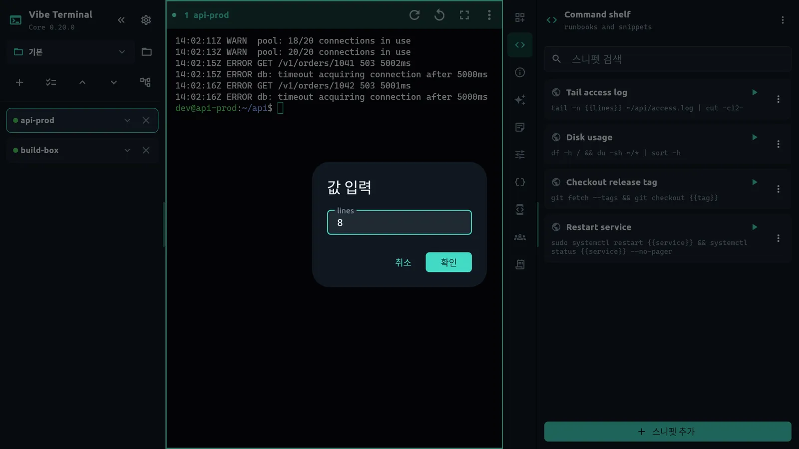
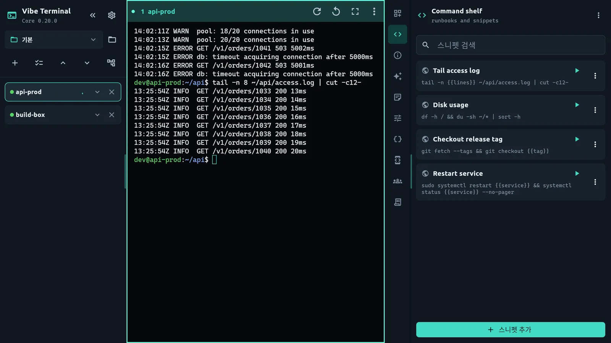
배포 시간, 로그 위치, 점검 순서처럼 그 서버에서만 필요한 내용을 메모로 남깁니다. 세션을 열면 해당 호스트의 메모가 바로 옆 패널에 열립니다.
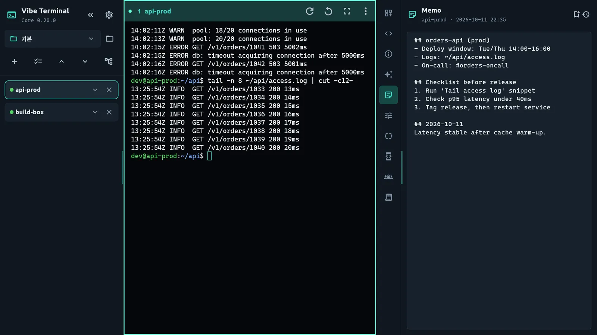
AI Chat으로 현재 터미널의 텍스트를 바탕으로 오류 원인이나 다음 명령을 물어볼 수 있습니다. OpenAI, Claude, Gemini, OpenAI 호환 서버나 Ollama를 직접 설정하세요. 사용료와 데이터 처리는 선택한 제공자에 따르며, Ollama도 설정에 따라 클라우드 모델을 사용할 수 있습니다.
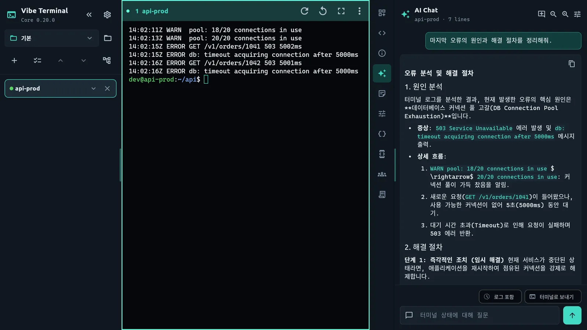
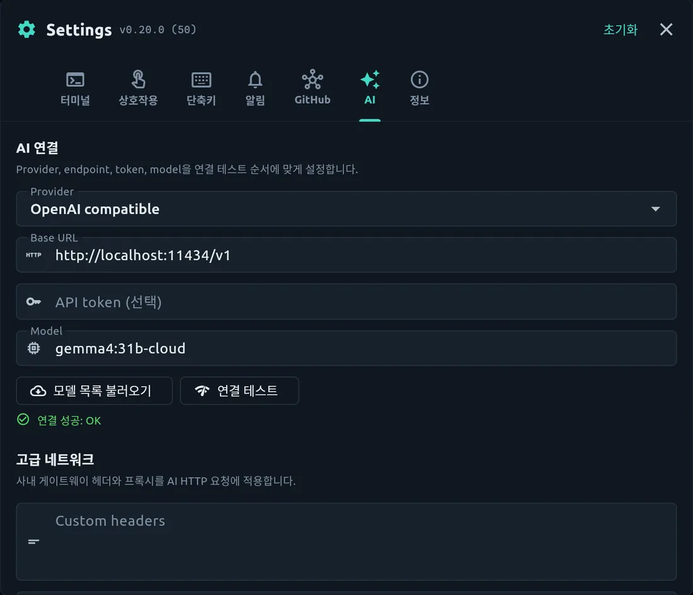
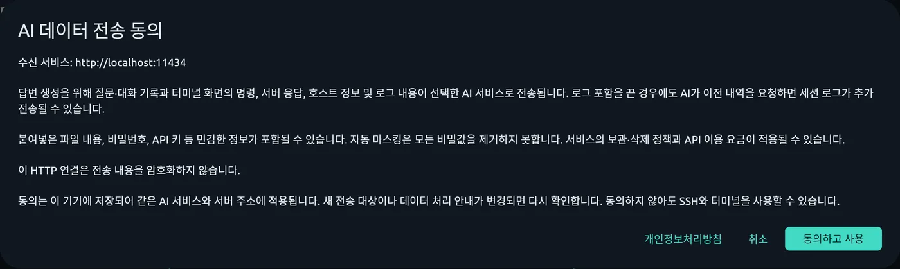
Claude Code, Codex, OpenCode 등을 로컬 또는 원격 터미널에서 직접 실행하세요. Core의 문서 모드로 출력을 읽고 지원되는 질문에 답할 수 있습니다. CLI 설치·로그인·모델 이용료는 각 도구에서 별도로 준비합니다.
GitHub 동기화를 켜면 호스트·스니펫·메모·키체인과 터미널 표시·알림·AI 설정이 내 private 저장소의 암호화된 파일 하나로 오갑니다. 터미널 테마와 폰트, 크기, 줄 간격은 미리보기를 보면서 고릅니다.
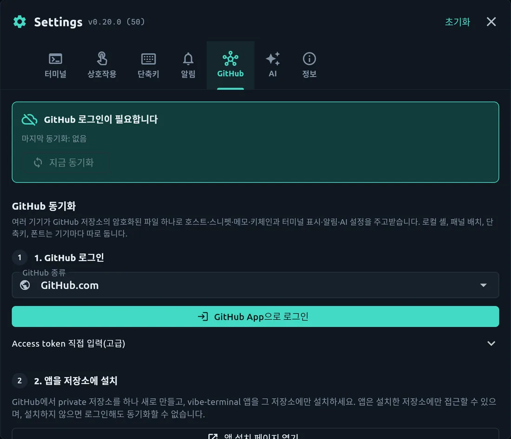
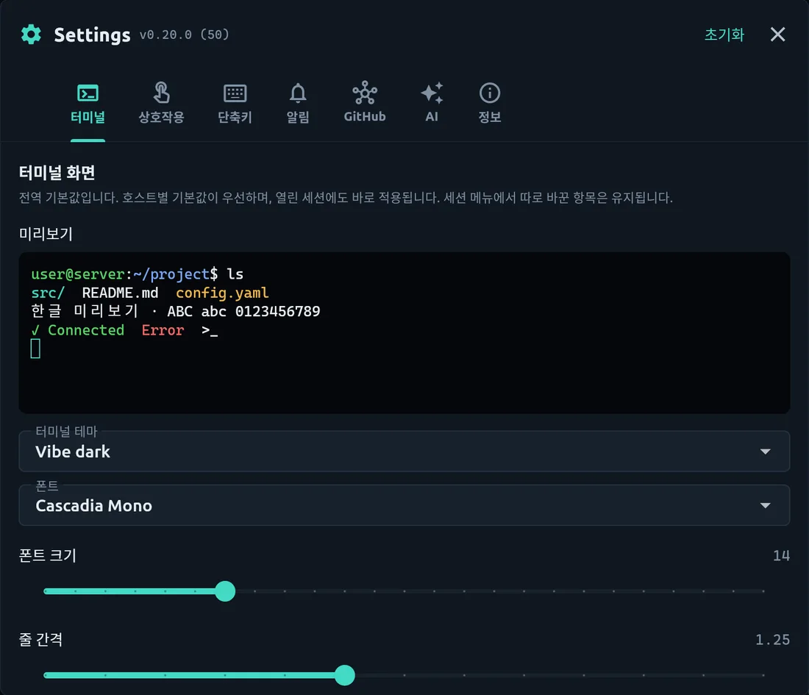
ANDROID · MOBILE LAYOUT
좁은 화면에서는 세션 목록이 서랍으로 들어가고, 키보드 위에 Esc·Tab·Ctrl·방향키 보조 키가 붙습니다. 이동 중에도 서버 상태를 확인하고, 데스크톱에서 하던 tmux 작업에 그대로 붙을 수 있습니다.
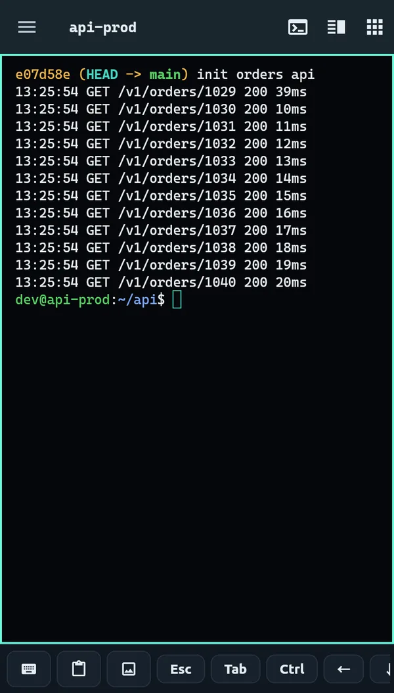
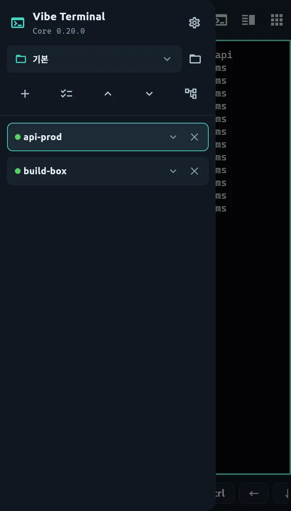
A day with Core
빌드 서버와 서비스 서버를 분할로 엽니다. 호스트 메모의 점검 순서를 따라 상태를 확인하고, 스니펫의 서비스 이름만 바꿔 로그 명령을 재사용합니다.
터미널에서 CLI를 시작한 뒤 문서 모드로 바꿉니다. 설명을 스크롤하고 코드 블록을 복사합니다. 질문이 감지되면 선택지나 직접 작성한 메시지로 답합니다.
Android에서 저장한 호스트를 열고 상태를 확인합니다. 서버에서 tmux로 유지한 작업이 있다면 다시 연결해 결과를 보고, 다음에 필요한 내용을 메모에 남깁니다.
Start in four steps
운영체제에 맞는 데스크톱 압축 파일을 받거나 Android에서 Google Play를 엽니다. 데스크톱은 압축을 풀고 포함된 라이브러리와 함께 실행하세요.
호스트 주소·포트·사용자·인증 방식을 저장합니다. 첫 SSH 접속 시 호스트키 지문을 신뢰할 수 있는 경로로 확인하세요. 데스크톱에서는 로컬 셸로 시작해도 됩니다.
세션을 그룹과 분할 화면으로 정리하고, 자주 쓰는 명령과 서버별 메모를 남깁니다. 작업 이어가기를 원하면 서버 tmux 설치와 호스트 옵션을 확인합니다.
문서 아이콘으로 보기 방식을 바꾸고, 필요할 때만 AI 제공자나 GitHub 동기화를 연결하세요. AI 없이도 SSH·문서 모드·스니펫을 사용할 수 있습니다.
Core 앱은 무료로 사용할 수 있습니다. AI는 선택 기능이며, 직접 연결한 제공자의 API 키·계정·모델 설정과 요금이 적용됩니다. CLI 도구의 구독이나 사용료도 별도입니다. AI를 연결하지 않아도 터미널과 문서 모드는 사용할 수 있습니다.
같은 터미널 세션의 실제 출력을 읽기 편하게 표현하는 보기입니다. 새 AI 모델을 실행하거나 CLI의 전체 대화 상태를 가져오는 기능은 아닙니다. 읽기와 복사에는 문서 모드, 화면 전체를 사용하는 도구의 세밀한 조작에는 터미널 모드를 선택하세요.
지원되는 Claude Code·Codex·OpenCode의 화면을 감지하는 방식이므로 도구 버전과 출력 형태에 따라 인식 결과가 달라집니다. 인식되지 않는 질문은 터미널에서 직접 답할 수 있습니다. AI 답변 후보는 별도로 AI Chat을 연결하고 버튼을 눌렀을 때만 생성됩니다.
원격 작업은 서버에 tmux가 있고 “작업 이어가기”를 사용한 경우, 서버에서 계속 실행 중인 작업에 다시 연결할 수 있습니다. 서버 재부팅·프로세스 종료·tmux 삭제는 별개입니다. 데스크톱 로컬 셸도 지원 환경의 내장 데몬으로 재연결을 지원하지만 모든 종료 상황에서 작업 보존을 보장하지는 않습니다.
앱 회원가입 없이 SSH와 로컬 기능을 시작할 수 있습니다. AI·GitHub 동기화·외부 공유를 이용할 때는 해당 서비스의 인증과 설정이 필요할 수 있습니다. 동기화는 선택 사항이며, 전체 백업에 인증 정보가 포함될 수 있으므로 저장소와 암호화 설정을 확인하세요.
공개 저장소에서 소스를 열람할 수 있으며 Vibe Terminal Source-Available License 1.0이 적용됩니다. 무제한 수정·재배포를 허용하는 오픈소스 라이선스와는 다릅니다. 이용·복제·수정·재배포 조건은 저장소의 LICENSE를 확인하세요.
SSH·로컬 셸·분할·문서 모드·지원 질문 클릭 응답·AI Chat·답변 제안·스니펫·메모·GitHub 동기화는 Core 범위입니다. 새 Agent 세션 및 새 worktree 자동 생성, Agent Chat, SFTP·포트 포워딩 UI, Vault, 브라우저 패널, 고급 자동화와 실험용 커스텀 앱은 Pro 범위입니다. 이 페이지의 다운로드는 Core입니다.
접근 권한이 있는 SSH 경유 호스트나 Kubernetes 게이트웨이를 먼저 준비해야 합니다. Kubernetes 경유 연결은 사용할 수 있는 kubectl과 올바른 클러스터 접근 설정이 필요합니다. Core가 서버나 클러스터의 권한을 대신 발급하지는 않습니다.
Data & control
SSH 연결에 앱 회원가입이나 AI 설정은 필요하지 않습니다. 호스트 정보와 메모는 기기에 저장하며, AI·GitHub 백업·공유 기능을 사용하면 각각의 목적지로 데이터가 전송됩니다. 기능별 범위를 확인하고 선택하세요.
호스트·스니펫·메모는 기기에, 비밀번호와 키는 운영체제 보안 저장소에 보관합니다.
AI에는 질문과 선택한 터미널 맥락이 전달될 수 있습니다. 수신 서비스에 대한 안내와 동의를 확인하고, 민감한 내용은 전송 전에 검토하세요.
GitHub 전체 백업은 인증 비밀을 포함할 수 있는 암호화 파일입니다. Gist·커뮤니티 공유는 별도의 공개 범위를 가지므로 저장소와 공유 대상을 직접 확인하세요.
문서 모드와 클릭 응답, 선택적 AI 기능을 포함한 Core부터 사용해 보세요. 별도 Pro 제품의 기능과 개인정보 안내는 Pro 페이지에서 구분해 확인할 수 있습니다.
별도 Pro 안내 보기 →Free Core edition
데스크톱은 GitHub Releases, Android는 Google Play에서 시작하세요. 이 페이지의 데스크톱 안내 기준은 Core 0.25.8이며, 각 배포 채널의 버전과 지원 조건은 다를 수 있습니다.
| 플랫폼 | 배포 파일·지원 조건 | 받는 곳 |
|---|---|---|
| Windows | Windows x64 · 압축을 푼 전체 폴더로 실행 | GitHub Releases |
| macOS | Apple Silicon ARM64 · Intel Mac 지원 빌드 아님 | GitHub Releases |
| Linux | Linux x64 · glibc 2.38 이상 (예: Ubuntu 24.04) · 데스크톱 그래픽 환경 및 한글용 CJK 폰트 | GitHub Releases |
| Android | Google Play 공개 Core · 스토어의 기기 호환성과 배포 버전 확인 | Android · Google Play |
데스크톱 안내 기준: v0.25.8. 릴리스별 변경사항과 SHA256SUMS를 함께 확인하세요. 앱 실행 파일 하나만 다른 폴더로 옮기면 포함된 라이브러리나 도구를 찾지 못할 수 있습니다.
화면 안내: 문서 모드와 대응 터미널 화면은 Core 0.25.8의 실제 Linux 앱에서 시연용 명령을 실행해 캡처했습니다. AI 답변이 아닙니다. 나머지 화면은 Core 0.20의 실제 앱과 데모 서버로 촬영한 기능 예시이며 현재 UI와 다를 수 있습니다. AI Chat 예시는 Ollama를 거쳐 ollama.com의 gemma4:31b-cloud가 데모 로그로 생성한 답변입니다. 휴대폰 이미지는 데스크톱 앱의 좁은 화면 레이아웃이며, 영상은 실제 Android Core 시연입니다.